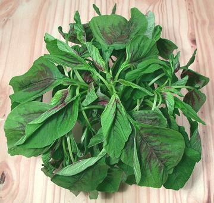
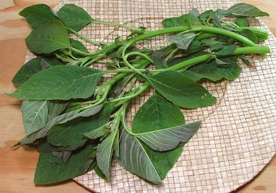
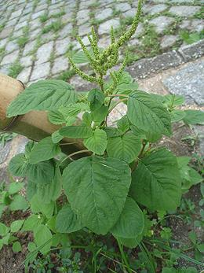

Amaranth - Greens
There are at least 70 species of Amaranth, and many of them are eaten
to at least some extent in various parts of the world. Listed here are
species most likely to be encountered in North America, which are also
the most common worldwide. For seeds see our
Amaranth Seeds page.
Asian Amaranth

[Chinese spinach; Red Spinach (markets); Pak khom (Thai);
Kilitis, Kulitis, Kalunay (Philippine); Chua, Chaulai, Harive, Cheera
(India); Bayam (Malaysia); Hinn Choy, Hen Choy, Yin Tsoi (China),
A. dubius, A. tricolor]
Originating in South or Southeast Asia, these Amaranth greens are now
grown and eaten through much of the world. The photo specimens were
obtained from a market in Los Angeles (Alhambra) serving a mixed
Vietnamese / Chinese community, but it is also very popular in parts
of India, Sri Lanka and the Caribbean. It is similar to spinach in
use but not as fragile so it accepts rougher handling and longer
cooking times. In addition to being a lot less tart, it's
somewhat mucilaginous so it has a thickening effect.
Amaranth roots are also nutritious, and used in soups in China,
Vietnam and Nigeria, but are not found in North American markets.
Greens and roots have significant medicinal uses.
More on Amaranths.
American Amaranth

[Quelite Quintonil (Mexico); Green (Nigeria); Efo Tete,
Tete eleegun (Yoruba); Aleho, Allayahu (Hausa); Inine (Igbo);
Common Amaranth, Red-root Amaranth, Redroot Pigweed;
Amaranthus hybridus syn. Amaranthus retroflexus]
Originating in the tropical Americas, these Amaranth greens are now
grown and eaten through much of the world's tropics. They are one of
the most popular greens in West Africa. The photo specimens were
purchased from a market in Los Angeles (Burbank) specializing in
Mexican, Central American and South American foods. The bunch was
about 15 inches long and weighed 12 ounces. Yield of edible leaves
was 4-1/4 ounces (34%).
More on Amaranths.
Green Amaranth

[Slender Amaranth; Cheng-kruk (Manipur, India); Kuppacheera
(Karala, India); Note Shak (Bengal); Tanduliya (Sanskrit);
Callaloo (Jamaica (name used for other greens elsewhere)); Massaagu
(Maldives); Amaranthus viridis]
This widely distributed plant is an important culinary green in South
Asia (India, Maldives, Bangladesh) and Africa. The seeds are also
used in those regions, and are easier to harvest than those of most
Amaranths. They have a nutty taste and are used as snacks, in biscuits
and porridges.
Photo by Eurico Zimbres distributed under license
Creative Commons
Attribution-ShareAlike v3.0 Unported.
More on Amaranths.
Buying:
Asian Amaranth greens are almost always in
stock at markets that serve a Southeast Asian community (at least here
in Southern California), but are not yet common in the Indian markets.
They are sold fresh in plastic bags. Depending on the market, they may
weight between 16 ounces with moderate sized stems to nearly 3 pounds
with stems up to 1/2 inch diameter. They cost about 2016 US $1.29 per
pound.
The American Amaranth greens are still difficult to find, but are
available in some Hispanic specialty markets.
Storage:
Wrapped loosely in plastic the leaves will
keep for about four days in the fridge.
Prep:
I float wash the stems as I would spinach, then
pinch off the leaves and tender tips (leave behind the leaf stems too,
as they are fibrous). I then remove all free water by spinning in my
salad spinner.
Yield:
Amaranth is quite stemmy. Yields I have
experienced have been up to 43% for particularly leafy Asian, and
around 34% for American.
Cooking:
This green is cooked in many ways, sometimes as
a recipe ingredient and sometimes just as greens. When cooking a big bunch
as greens, the cooking water is usually discarded because of the oxalic
acid content, and sometimes high nitrate content (depending on soil).
Health & Nutrition:
Amaranth greens
contain an unusual amount of manganese and magnesium, as well as plenty
of iron and phosphorus. They also contain significant amounts of calcium,
zinc, selenium and potassium. They are also noteworthy for Vitamin E and
B complex, and a high amount of protein for a leafy green. Oxalic acid
content may somewhat inhibit absorption of the zinc and calcium. While
the oxalic acid content is much lower than that of spinach, it is still
recommended that people suffering from kidney problems, gout and
rheumatoid arthritis avoid this green.
cn_amaranz 100315 - www.clovegarden.com
©Andrew Grygus - agryg@clovegarden.com - Photos
on this page not otherwise credited © cg1
- Linking to and non-commercial use of this page permitted